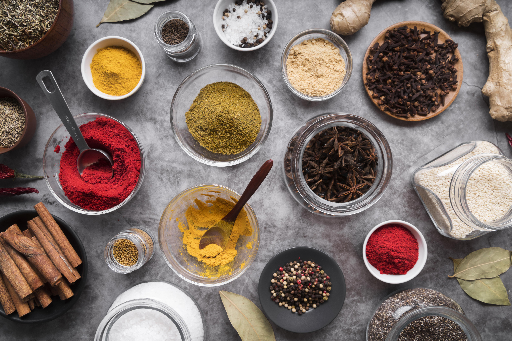

Porady kulinarne:
- Planuj przed gotowaniem: Przed przystąpieniem do gotowania, zawsze warto zaplanować wszystkie składniki i etapy procesu, aby uniknąć chaosu i zapewnić, że wszystko jest gotowe w odpowiednim czasie.
- Wykorzystaj świeże składniki: Stosowanie świeżych składników, takich jak warzywa, owoce i zioła, może znacznie poprawić smak i jakość potraw.
- Przestrzegaj proporcji: Ważne jest, aby przestrzegać proporcji składników w przepisie, ponieważ może to wpłynąć na smak i teksturę potrawy.
- Ogrzej patelnię przed dodaniem składników: Ogrzewanie patelni przed dodaniem składników pozwoli na równomierne rozprowadzenie ciepła i zapobiegnie przywieraniu potrawy.
- Zachowaj umiar przy soleniu: Przesolona potrawa może zepsuć cały smak, dlatego ważne jest, aby zachować umiar przy soleniu.
- Dobrze wymieszaj składniki: Przed dodaniem składników do potrawy, zawsze warto dokładnie je wymieszać, aby zapewnić równomierne rozprowadzenie smaku.
- Korzystaj z odpowiedniego sprzętu: Używanie odpowiedniego sprzętu, takiego jak noże, patelnie czy garnki, może znacznie ułatwić i poprawić jakość gotowania.
- Nie przekładaj mięsa zbyt często: Przekładanie mięsa zbyt często może spowodować utratę soków i wpłynąć negatywnie na smak potrawy.
- Odpowiednio przechowuj żywność: Przechowywanie żywności w odpowiednich warunkach, takich jak temperatura i wilgotność, może zapobiec psuciu się produktów spożywczych i zachować ich świeżość.
- Bądź kreatywny: Eksperymentowanie z różnymi składnikami i technikami kulinarnymi może prowadzić do odkrycia nowych smaków i potraw, które staną się ulubionymi.
- Nie krojąc, trzymaj noże ostre: Ostre noże ułatwią krojenie i zmniejszą ryzyko skaleczenia. Noże należy regularnie ostrzyć, aby zachować ich ostrość.
- Zawsze zagotuj wodę przed dodaniem makaronu lub ryżu: Przed dodaniem makaronu lub ryżu do gotującej się wody, należy upewnić się, że woda jest już zagotowana. W przeciwnym razie, potrawa może nie ugotować się równomiernie.
- Nie dodawaj zbyt dużej ilości składników: Przygotowując potrawę, należy pamiętać, że zbyt duża ilość składników może wpłynąć negatywnie na smak i teksturę potrawy.
- Ograniczaj ilość tłuszczu: Nadmiar tłuszczu może zepsuć smak potrawy oraz prowadzić do problemów zdrowotnych. Warto ograniczyć ilość używanego tłuszczu w potrawach.
- Używaj różnych przypraw: Dodanie różnych przypraw może znacznie poprawić smak potrawy. Warto eksperymentować z różnymi kombinacjami, aby odkryć nowe ulubione smaki.
- Gotuj na wolnym ogniu: Gotowanie na wolnym ogniu pozwala składnikom uwalniać swoje aromaty i smaki, co prowadzi do lepszego smaku potrawy.
- Podawaj gorące potrawy na gorąco: Gorące potrawy najlepiej smakują, kiedy są podawane na gorąco. Dlatego warto zadbać o to, aby potrawy były serwowane w odpowiednim czasie.
- Sprawdzaj temperaturę mięsa: Sprawdzanie temperatury mięsa przed podaniem potrawy jest ważne, aby upewnić się, że mięso jest w pełni ugotowane i bezpieczne do spożycia.
- Zachowaj czystość w kuchni: Czystość i higiena w kuchni są bardzo ważne dla zapewnienia bezpieczeństwa i jakości potraw. Warto dbać o regularne sprzątanie i dezynfekcję sprzętu kuchennego i powierzchni roboczych.
- Bądź cierpliwy: Gotowanie wymaga czasu i cierpliwości. Warto poświęcić odpowiedni czas, aby potrawa była dokładnie przygotowana i smaczna.